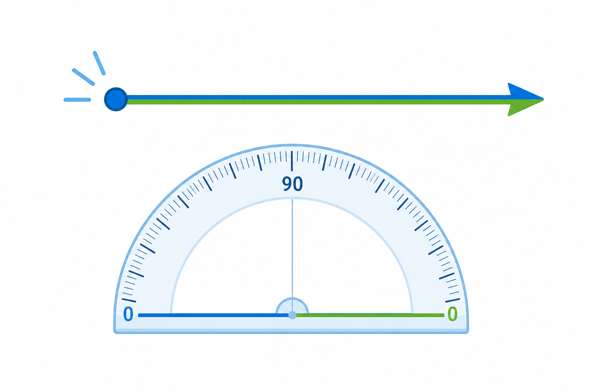

Co to jest? Що це?
Kąt zerowy: oba ramiona leżą na sobie — jak zamknięte nożyczki. Miara wynosi 0°.
Нульовий кут: обидві сторони лежать одна на одній — як закриті ножиці. Міра 0°.
Jak w szkole? Як у школі?
Na kątomierzu to początek skali: 0°. Jeszcze nie ma „rozworu”.
На кутомірі це початок шкали: 0°. Ще немає «розхилу».
Przykład z życia Приклад з життя
Ramiona „sklejone” — 0°. Jak zamknięte nożyczki.
Сторони «склеєні» — 0°. Як закриті ножиці.
0°